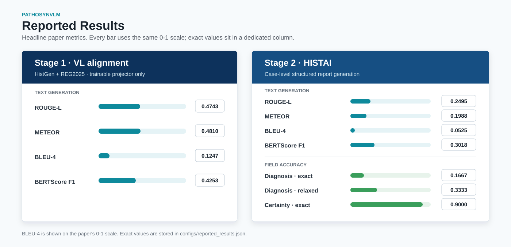

Encode efficiently
A frozen CONCHv1.5 encoder represents 512 × 512 tissue patches sampled at 5× magnification, sharply reducing the number of visual tokens.
Accepted at DeLTA 2026
Simple Token-Efficient Vision-Language Model for Case-level Pathology Synoptic Report Generation
* Equal contribution
Concordia University · Centre de recherche du CHUM, Université de Montréal · IRIC, Université de Montréal · Mila
Overview
PathoSynVLM turns patch embeddings from one or more whole-slide images into a concise, structured synoptic report. It keeps the pathology encoder frozen, learns a lightweight visual-to-language bridge, and uses explicit WSI markers to preserve slide boundaries within each case.
Generating clinically useful pathology reports for pathology cases from whole-slide images (WSIs) is challenging due to gigapixel resolution, long visual-token sequences, and the complexity of case-level reasoning, where a single case may contain multiple WSIs with heterogeneous tissues and ambiguous findings. We present a simple token-efficient vision–language model for case-level synoptic report generation that remains practical under constrained GPU memory. Our architecture follows a minimal three-component design: a frozen pathology patch encoder, a lightweight two-layer MLP vision-language aligner, and a large language model decoder, with an explicit WSI marker token to separate slides within a case. Training proceeds in two supervised stages: (1) aligner-only WSI captioning using heterogeneous WSI-text pairs, and (2) case-level supervised fine-tuning on case-report pairs for structured report generation. To reduce sequence length, we represent each slide using 512 × 512 patches at 5× magnification, which reduces the average sequence length by up to 64× compared to commonly used 20× patches. Combined with efficient training techniques, we enable practical training with only half an NVIDIA H100 GPU. Across both training stages, our approach achieves high ROUGE-L/METEOR/BLEU-4 scores while being substantially more efficient in memory and runtime. In AI-based evaluations, our model is consistently preferred over strong baselines. Extensive ablations characterize performance-efficiency trade-offs and identify simple choices that improve robustness in multi-WSI settings. Overall, this work provides a strong, reproducible baseline for efficient pathology report generation, lowering the barrier to multi-WSI VLM research under limited compute.
Method
The same compact architecture first learns the visual-language interface, then learns case-level structured generation.

A frozen CONCHv1.5 encoder represents 512 × 512 tissue patches sampled at 5× magnification, sharply reducing the number of visual tokens.
A two-layer MLP maps pathology embeddings into the Qwen2.5 token space. Stage 1 trains only this lightweight bridge on WSI–text pairs.
Stage 2 fine-tunes Qwen2.5-3B-Instruct on case-report pairs. Learnable marker tokens tell the decoder where each WSI begins.
Results
The repository records the reported metrics in a machine-readable configuration and provides the matching evaluation pipeline.

Structured output
The decoder produces a compact case-level record designed for reproducible evaluation and straightforward downstream parsing.
Diagnosis: ...
Certainty: ...
Conclusion: ...Resources
The public repository includes training, evaluation, inference, configuration, and release utilities aligned with the paper.
Read the abstract and download the preprint from arXiv.
arXiv:2605.30716Explore the training, evaluation, and report-generation implementation.
AtlasAnalyticsLab/PathoSynVLMFollow the paper-aligned configs and end-to-end command sequence.
Paper pipelinePrepare the public datasets and expected CONCH feature layout.
Data documentationModel weights are not linked here until the release repository is publicly accessible. The code repository documents the expected package format in the meantime.
Citation
@misc{yang2026simpletokenefficientvisionlanguage,
title = {Simple Token-Efficient Vision-Language Model for
Case-level Pathology Synoptic Report Generation},
author = {Zhiyuan Yang and Jiahao Cheng and
Vincent Quoc-Huy Trinh and Mahdi S. Hosseini},
year = {2026},
eprint = {2605.30716},
archivePrefix = {arXiv},
primaryClass = {cs.CV},
url = {https://arxiv.org/abs/2605.30716}
}{kind=link}